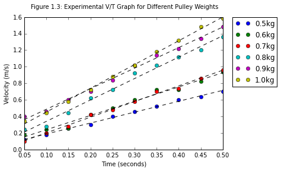
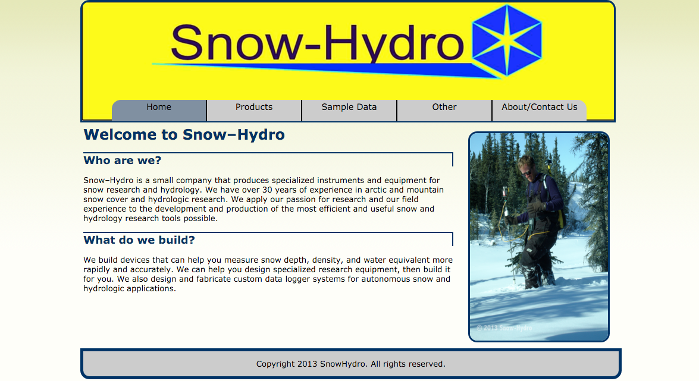
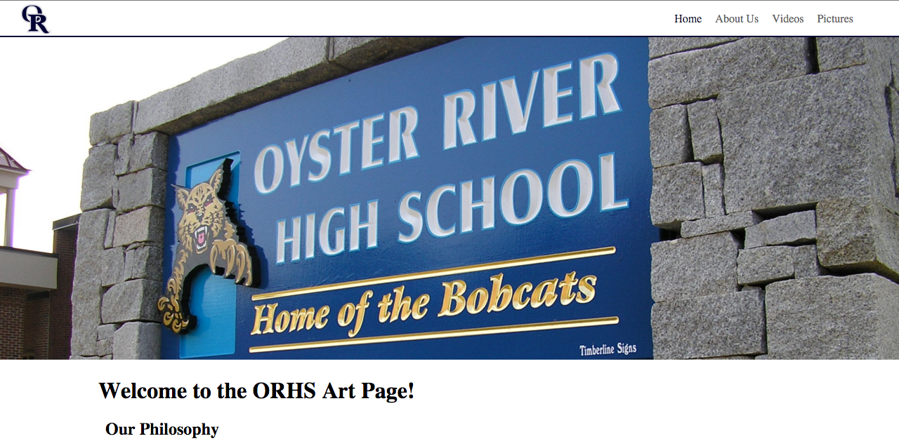
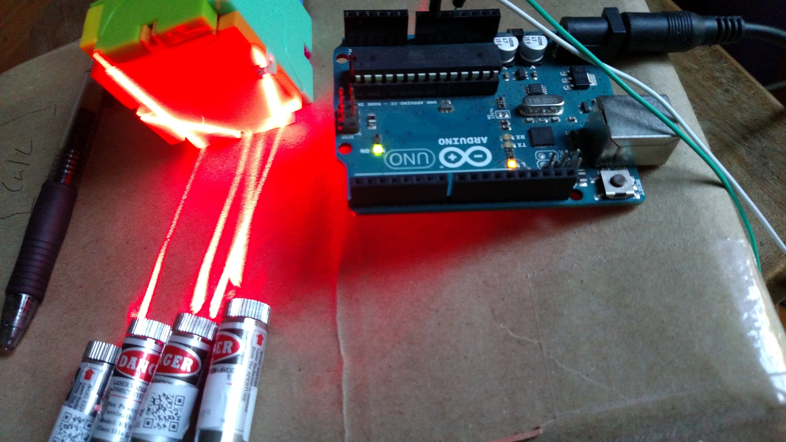
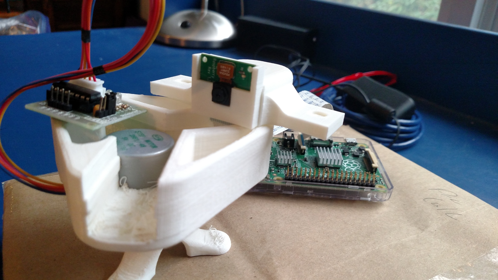
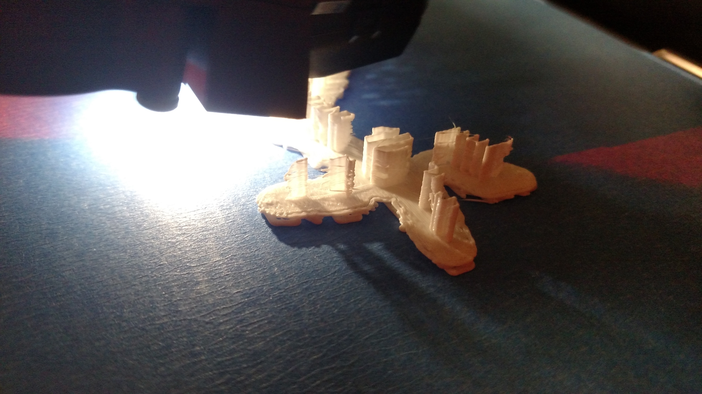

What do you want to know about?
I have been learning a varity of languages in my free time, as well as different kinds of electronics.
Jump to: Python, Web Design, Circuits, or other info.
I have been learning a varity of languages in my free time, as well as different kinds of electronics.
Jump to: Python, Web Design, Circuits, or other info.
Python was the second language I learned, after english. One late January day, I decided I wanted to learn to program. I thought that computers were programmed with binary, so I sat down and messed with the concept of a base-2 counting system until it made sense to me. Proud of my acomplishemnt, I sat there and came to the realization that it would be really hard to tell anything what to do in zeros and ones, and there must be another way. I stumbled right into the friendly arms of python.
Most recently I have been using python for data analysis (in the photo). Using a combination of numpy and matplotlib, I've been able to take a chunk of data and turn it into graphs, differences, mass conversions, etc. Most of the data has come from labs in AP Physics, and the graphs are for the lab reports. Doing the graphs these ways may take longer, but I feel like I get more out of it. Using python for data analysis also means that processing large ammounts of data will be much easier than doing it in excel.
I introduced myself to web design due to interest alone, it was almost accidental. With very little experience I knew I enjoyed writing web pages, and decided to challenge myself. I signed up for a semester of web design at the local college at 13. It just grew from there.
While I was taking the class, I got an offer to design a website for a friend of my dad. This person ran their own buisness, and needed a more "modern" website. After meeting with them, I started to design. Building out from a logo, a site started to form. This site can now be found at www.snowhyrdo.com. This was my first "real" website, and with each site, I do my best to make improvements.
More recently, I've been asked to work on a high school's art page, as well as another website for the school's "hack shack". The art page is still under construction, but it employs new methods that should make the page stand out to viewers! The hack shack page is on this site.
My exploration of the electrical world began when I followed a friend into something called a "Saturday Thing". I was suddenly surronded by a new atmosphere. I was very interested in what many people were doing, but didn't know where to start. Someone handed me a sparkfun intro to arduino kit, and everything spiraled from there.
I have done such a varity of projects, it's hard to think of them all. Most of them are spontanious, one day I'll think, "Hey, wouldn't it be cool to make that?" One of the first projects I remember was a remote control car. I used a tupperware contanier for the body. With a moter to the back wheels and a servo to the front two, I had a moving car. With x-bee radios, python, and processing, I got the wheels running from my comptuer. I would drive the car around with the W,S,A, and D keys while watching what the car sees by running a facetime call with an iPod on the car.
After the car, it was an ROV controlled via arduino, now a quadrotor, with many smaller projects in between. I have also done a couple of projects with the Raspberry Pi. I built a timelapse camera and had it sit on a robin's nest, taking a picture every ten minutes and uploading it to a website. Now I'm working on a 3d scanner using 3d printed parts, lasers, and a rasperry pi's camera. Check out the Hack Shack Blog for updates on this!
Througout my years as an "inventor", I've gotten myself into some interesnting places. I attened "Alaska Sumemr Research Accadamy (ASRA)" for three years, enjoyed two semesters of web design at University of Alaska, Fairbanks, and attened countless "Saturday Things". Interested?
I have done a lot of things. Probably one of my favorite programs was called ASRA, or the Alaska Summer Research Acadamy. Unfortuanitly UAF shut it down due to lack of funding, but before it was shut down, I was lucky enough to spend parts of three summers there. Each year you apply and get into a "module". I got to do robotics, smart circuts, and micro mouse. My favorite out of the three was probably micro mouse, because of the level of the problem I needed to solve. Everyone in the module worked on creating a robot "mouse", that had to solve a maze. I learned a lot from this process, and it still helps me to this day.